1. Micro 타입 서버에서 사용할 수 없는 서비스
네이버 클라우드 Micro 타입 서버에서 사용할 수 없는 서비스
써드아이시스템이 네이버 클라우드 프리미엄 파트너사로 활동하면서 보유하게 된 네이버 클라우드와 관련된 여러 기술 노하우들을 많은 분들께 공유하려고 합니다.
네이버 클라우드 Cloud Functions에서 Action을 만들 수 있는 언어중에서 PHP를 이용하여 SMTP로 메일을 발송하는 방법을 소개하려고 합니다.
메일 발송을 위한 솔루션은 PHPMailer를 이용하고, 발송 서버는 gmail을 이용하는 과정을 정리해보겠습니다.
PHP에서 SMTP를 이용한 메일을 발송하려고 할 때 흔히 사용하는 것이 PHPMailer입니다.
PHPMailer는 GitHub에 있는 사이트로 가서 Code를 선택하고 Download ZIP을 클릭하면 다운받을 수 있습니다.
일반적인 Linux서버에서 사용하는 경우라면 composer를 이용해서 설치하면 되겠지만 Cloud Functions에는 zip 파일로 소스코드를 업로드 해야 하기에 다운로드 받겠습니다.
https://github.com/PHPMailer/PHPMailer
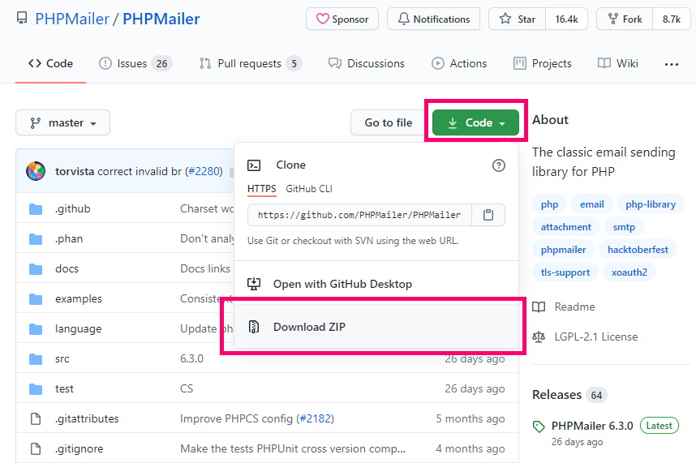
다운받은 zip파일을 압축해제하면 아래와 같은 파일과 폴더를 확인할 수 있는데 여기서는 src, language 두 폴더만 사용합니다.

PHPMailer에서 제공하는 샘플코드를 참고해서 꼭 필요한 코드만 적었습니다. 파일은 index.php로 저장합니다.
추가로 필요한 코드가 있으면 아래 링크에 있는 PHPMailer 샘플코드를 참고하시면 되겠습니다.
https://github.com/PHPMailer/PHPMailer/blob/master/examples/gmail.phps
<?php
use PHPMailer\PHPMailer\PHPMailer;
use PHPMailer\PHPMailer\SMTP;
use PHPMailer\PHPMailer\Exception;
require 'src/Exception.php';
require 'src/PHPMailer.php';
require 'src/SMTP.php';
function main(array $args) : array
{
$gmail_user_name = 'gmail 계정';
$gmail_app_password = '앱 비밀번호';
$from_name = '발신자 이름';
$from_email = '발신자 메일주소';
$to_name = $args["to_name"] ?? $from_name; //수신자 이름
$to_email = $args["to_email"] ?? $from_email; //수신자 메일주소
$result = "";
$result_msg = "";
try
{
$mail = new PHPMailer();
$mail->isSMTP();
$mail->SMTPDebug = SMTP::DEBUG_SERVER;
$mail->Host = 'smtp.gmail.com';
$mail->Port = 587;
$mail->SMTPSecure = PHPMailer::ENCRYPTION_STARTTLS;
$mail->SMTPAuth = true;
$mail->setLanguage("ko", "language/");
$mail->CharSet = PHPMailer::CHARSET_UTF8;
$mail->Username = $gmail_user_name;
$mail->Password = $gmail_app_password;
$mail->setFrom($from_email, $from_name);
$mail->addAddress($to_email, $to_name);
$mail->Subject = 'PHPMailer GMail SMTP test';
$mail->Body = 'Cloud Functions에서 PHPMailer로 발송한 메일';
if (!$mail->send())
{
$result = "fail";
$result_msg = $mail->ErrorInfo;
}
else
{
$result = "success";
$result_msg = 'Message sent!';
}
}
catch(Exception $e)
{
$result = "error";
$result_msg = $e->getMessage();
}
return [$result => $result_msg];
}
?>
보안 이슈 : 위 소스코드에서 알아보기 쉽게 password 라는 변수명을 사용하기는 했지만, 여러 상황에서 해킹 관련 이슈(예: grep 명령어를 사용해 password 정보가 포함된 파일 검색)가 발생할 수 있으니 실제 서비스에서는 password 라는 단어 대신에 다른 단어를 사용하기를 추천 드립니다. $gmail_app_password 뿐만 아니라 $mail->Password 가 포함된 PHPMailer.php 소스도 함께 수정하시면 더욱 안전할 수 있습니다.
위 소스코드에서 gmail에 로그인할 계정과 비밀번호를 적는 부분에서 앱 비밀번호를 관심있게 보셔야 합니다.
$gmail_user_name = 'gmail 계정';
$gmail_app_password = '앱 비밀번호';
외부앱이나 서버에서 gmail 즉 google 계정에 로그인 인증을 하려면 2단계 인증을 설정하고, 앱 비밀번호를 생성해서 사용해야 합니다. 예전에는 보안 수준이 낮은 앱의 액세스 허용 옵션으로 가능했었지만, 지금은 그렇게 하면 인증이 실패하는 경우가 많습니다. 앱 비밀번호 설정하는 방법은 아래 링크를 참고하시면 되겠습니다.
https://docs.3rdeyesys.com/99.etc/etc_smtp_auth_to_google_gmail_account/
이번 메일 발송 기능 함수는 메일 수신자 이름과 메일 주소를 json 형식의 파라미터로 전달 받고, 결과를 json 형식으로 리턴하는 구조로 되어 있습니다. 아래와 같이 만약 파라미터가 없을 경우에는 발신자 이름과 메일주소와 동일한 기본값으로 설정했습니다.
function main(array $args) : array
{
$to_name = $args["to_name"] ?? $from_name; //수신자 이름
$to_email = $args["to_email"] ?? $from_email; //수신자 메일주소
return [$result => $result_msg];
}
메일 발송 코드가 실행되는 과정에 여러 오류가 발생할 수 있는데, 오류가 발생했을 때 오류 메시지를 확인할 수 있도록 디버깅 레벨을 다음 코드로 설정하고 있습니다.
테스트가 끝나고 실제 서비스에 사용할 때는 DEBUG_OFF 옵션으로 변경하시기 바랍니다.
$mail->SMTPDebug = SMTP::DEBUG_SERVER;
//SMTP::DEBUG_OFF = off (for production use)
//SMTP::DEBUG_CLIENT = client messages
//SMTP::DEBUG_SERVER = client and server messages
//SMTP::DEBUG_CONNECTION = As DEBUG_SERVER plus connection status
//SMTP::DEBUG_LOWLEVEL = Low-level data output, all messages
코드가 실행되면서 나타날 수 있는 각 종 오류메시지를 표시할 언어와 메일 내용의 CharSet을 설정하는 코드입니다.
$mail->setLanguage("ko", "language/");
$mail->CharSet = PHPMailer::CHARSET_UTF8;
위에서 작성한 소스코드를 index.php로 저장하고 클래스 파일들이 들어있는 src 폴더와 언어 파일이 들어있는 laguage 파일과 함께 zip 파일로 압축합니다.
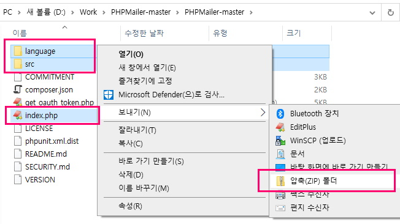
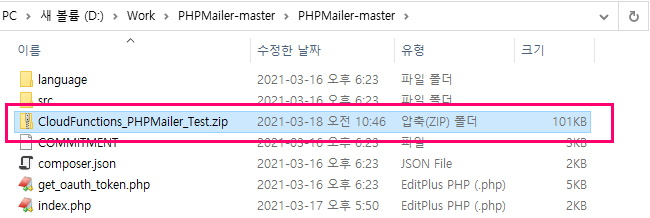
네이버 클라우드 콘솔에서 Cloud Functions에 들어가 이용신청을 합니다.

버튼을 선택해 액션을 생성합니다.

액션을 생성하기 전에 트리거 조건을 설정해야 하는데, 여기서는 트리거 설정 없이 액션 만들기를 선택하겠습니다.
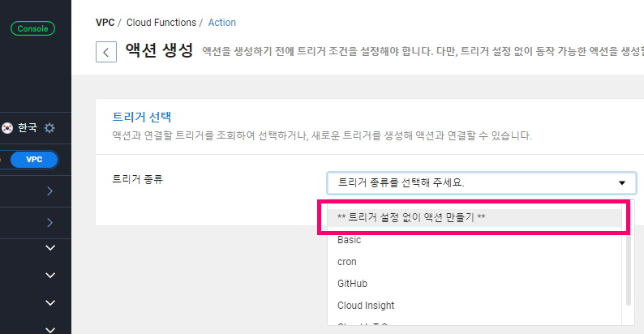
액션의 이름은 특별한 규칙이 없으니 알아보기 쉬운 것으로 입력하면 됩니다.

소스코드 언어 중에서 php는 7.1, 7.3이 있는데 둘 중에 편하신대로 선택하시면 됩니다.
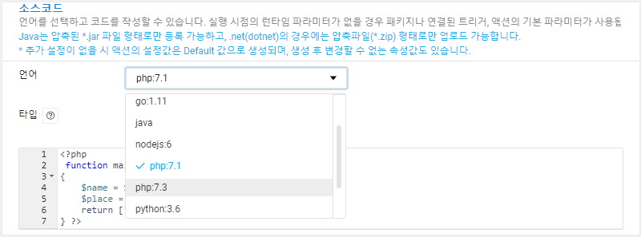
소스코드 타입은 코드 직접 입력과 파일 업로드가 가능한데, 앞에서 만든 소스코드를 선택하고 업로드 합니다.
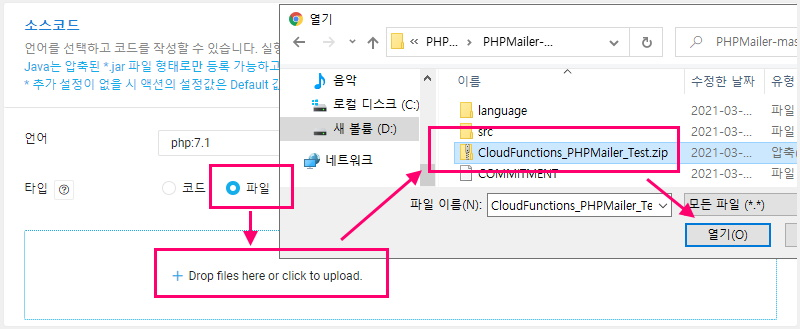
소스코드가 업로드 되었습니다. 등록된 소스코드는 나중에 다운로드 할 수도 있고 다른 파일을 재업로드 할 수도 있습니다.

VPC 환경에서는 연결할 VPC와 Subnet을 선택해야 합니다. Classic 환경에서는 다음 단계인 [옵션 설정]으로 바로 이동하시면 됩니다.
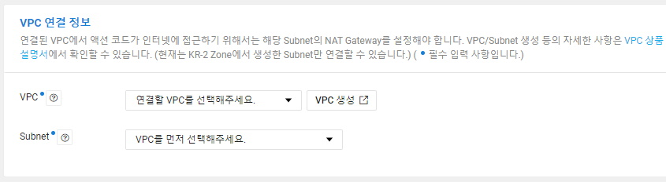
혹시 VPC를 생성하지 않았거나 새로운 VPC에서 실행하려고 할 경우에는 VPC생성 버튼을 클릭해서 새 창에서 VPC를 생성합니다. VPC는 논리적으로 격리된 네트워크 공간을 뜻하며, IP 주소 범위는, private 대역(10.0.0.0/8,172.16.0.0/12,192.168.0.0/16) 내에서 /16~/28 범위여야 합니다.
https://console.ncloud.com/vpc-network/vpc

사용할 수 있는 Subnet이 없거나 새로 생성할 경우 Subnet 생성 버튼을 클릭합니다.
이름은 알아보기 쉽게 [ cf-phpmailer-smtp-subnet ]으로 입력했습니다.
Subnet의 IP 주소 범위는 VPC 주소 범위 이하로만 지정이 가능하며, private 대역(10.0.0.0/8,172.16.0.0/12,192.168.0.0/16) 내에서 /16~/28 범위여야 합니다.
위에서 VPC IP주소 범위가 [ 192.168.0.0/16 ]이었기에 Subnet IP주소 범위는 [ 192.168.0.0/24 ]로 설정했습니다.
여기서 중요한 것이 [Ineteget Gateway 전용여부] 항목입니다.
Cloud Functions는 Private Subnet에서만 작동하므로 N (Private)을 선택하셔야 합니다.
용도는 일반으로 선택하시면 됩니다.
https://console.ncloud.com/vpc-network/subnet

위에서 생성한 Subnet이 Private이기 때문에 Cloud Functions으로 메일을 발송 즉, 외부와 통신을 하기 위해서는 NAT Gateway를 만들고 적용해주어야 합니다.
이름은 [ cf-phpmailer-smtp-natgateway ]로 입력했습니다.
https://console.ncloud.com/vpc-network/natgw

이제 Cloud Functions이 속한 Subnet이 NAT Gateway를 거쳐서 외부로 나갈 수 있도록 Route Table을 설정합니다.
VPC를 만들때 자동으로 생성된 2개의 Route Table중에서 private table을 선택하고 연관 Subnet 탭을 보시면 위에서 생성했던 [ cf-phpmailer-smtp-subnet ]을 확인할 수 있습니다.
https://console.ncloud.com/vpc-network/routeTable

이제 Routes 생성 버튼을 클릭하고 설정 값들을 입력, 선택하고 생성 버튼을 클릭합니다.

생성 버튼을 클릭하고 나면 설정이 추가된 것을 확인할 수 있습니다. 이제 확인 버튼을 클릭해서 창을 닫습니다. 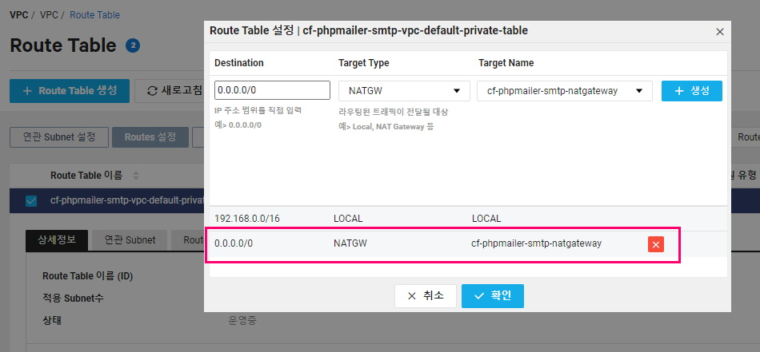
창을 닫고 나면 설정이 추가된 것을 Routes 탭에서 확인할 수 있습니다. 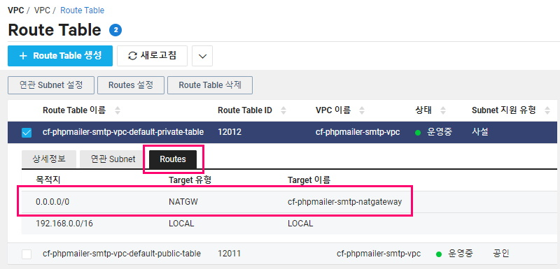
VPC관련 설정이 끝났으면 이전 창으로 돌아가서 다음 단계인 [ 옵션 설정 ]을 확인하시면 됩니다.
실행할 Main 함수의 이름은 main으로 그대로 두시고, 액션 메모리와 Timeout은 기본으로 두셔도 되고 익숙해진 이후에 상황에 맞게 조정하시면 됩니다.
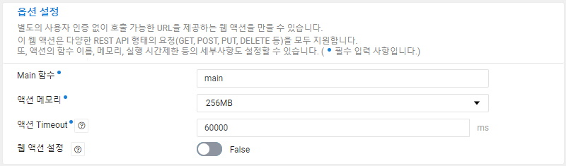
디폴트 파라미터의 경우 필요하실 경우 설정하시면 됩니다.
모든 준비가 끝났으면 생성 버튼을 클릭하여 액션을 생성합니다.

이제 생성된 액션을 실행해보겠습니다. 액션의 기본정보 화면에서는 액션 실행과 수정, 삭제를 할 수 있고, 모니터링 화면에서는 액션이 실행된 통계 정보를 확인할 수 있습니다.
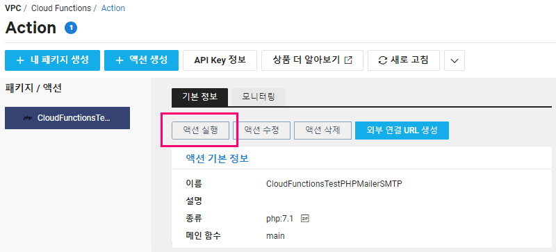
액션 실행화면 왼쪽에는 파라미터를 입력할 수 있고,
오른쪽에는 결과가 나오는데 전체 결과 메시지를 확인하거나 결과만 보기 옵션으로 최종 성공 실패에 대한 결과 메시지만 볼 수도 있습니다.
우선은 파라미터 없이 실행해 보았고, 무사히 성공한 결과가 나왔습니다.
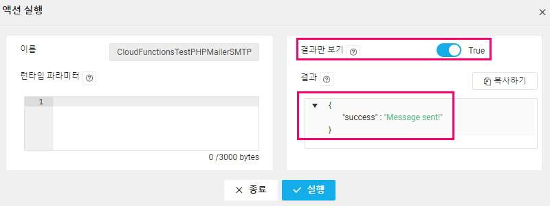
이번에는 파라미터를 입력하고 액션을 실행해보았습니다. 파라미터는 json 형태로 입력하면 됩니다.
왼쪽 창에서 입력한 파라미터가 결과에 잘 반영되어 나왔습니다.
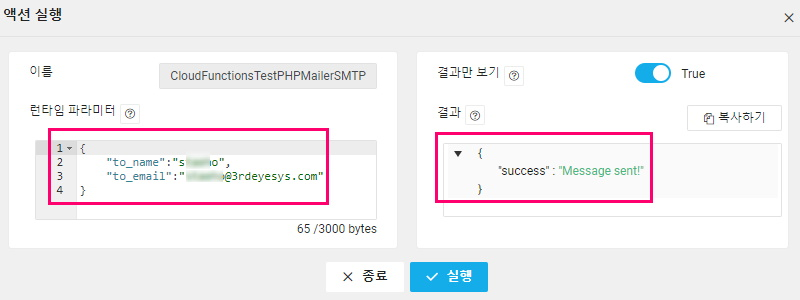
결과만 보기 옵션을 끄고 실행하면 이렇게 스크롤 해야만 전체를 확인할 수 있을 정도로 긴 결과 메시지가 나타납니다.

메일함에서 확인해보면 이렇게 메일이 무사히 도착한 것을 확인할 수 있습니다.

위에서 앱 비밀번호를 사용해야 한다고 했는데 혹시 앱 비밀번호를 사용하지 않았을 경우 다음과 같은 오류 메시지가 나타나는 경우가 있습니다.
The SMTP server requires a secure connection or the client was not authenticated.
The server response was: 5.7.0 Authentication Required.
이 문제, 인증 오류 메시지를 해결하려면 아래 내용대로 설정을 하시면 해결됩니다.
https://docs.3rdeyesys.com/99.etc/etc_smtp_auth_to_google_gmail_account/
https://guide.ncloud-docs.com/docs/compute-compute-15-2-6.html
문서 최종 수정일 : 2021-03-17
네이버 클라우드 Server 관련 문서들입니다.
네이버 클라우드 Micro 타입 서버에서 사용할 수 없는 서비스
네이버 클라우드 서버 스펙 변경
네이버 클라우드 서버 정지 시 요금할인 횟수와 기한 등을 대한 안내입니다
네이버 클라우드 Auto Scaling 서비스 제한사항
네이버 클라우드 스토리지 추가 생성 기본 가이드
네이버 클라우드 ACG(Access Control Group) 가이드
네이버 클라우드 Linux 스토리지(디스크) 추가 상세 가이드
네이버 클라우드 백업 서비스 가이드와 신청 절차
네이버 클라우드 서버 접속 가이드 - 공인IP 없을 때
네이버 클라우드 서버 접속 가이드 - 공인IP 있을 때
네이버 클라우드 VPC 환경에서 서버 생성
네이버 클라우드 AutoScaling 그룹 이벤트 설정하는 방법
네이버 클라우드 Cloud Functions Action을 .Net (C#)을 사용하여 윈도우 명령프롬프트(cmd)에서 만드는 방법
네이버 클라우드 Cloud Functions Action을 .Net (C#)을 사용하여 Visual Studio에서 만드는 방법
네이버 클라우드 Cloud Functions에서 PHPMailer를 사용하여 gmail을 통해 SMTP로 메일 발송하는 방법
네이버 클라우드 리눅스 서버에 SSH로 접속할 때 필요한 보안 설정입니다.
네이버 클라우드 Classic 환경에서 서버 이미지를 다른 계정에 공유하는 방법을 소개합니다.
네이버 클라우드 Classic 환경 Windows 서버 이미지를 VPC 환경으로 복제하는 방법을 소개합니다.
네이버 클라우드 리눅스 서버의 Block Storage를 LVM으로 구성하는 방법입니다
네이버 클라우드 Kubernetes Service 클러스터 생성 및 제어 가이드입니다
네이버 클라우드 Classic 환경에서 AutoScaling 설정하는 방법입니다.
네이버 클라우드 서버 모니터링 서비스 Monitoring 설정 가이드입니다
네이버 클라우드 모니터링 서비스 Cloud Insight 설정 가이드입니다
네이버 클라우드 Classic 환경 vs VPC 환경 비교 가이드입니다
네이버 클라우드 Secure Zone이나 Private Network 환경에서 Repository를 변경해 리눅스 패키지 설치하는 방법입니다.
네이버 클라우드 서비스에서 X-Forwarded-For를 이용해 Proxy, Load Balancer 환경에서 Client IP를 Apache access_log에 기록하는 방법입니다
네이버 클라우드 CentOS에서 NginX 설치, 설정하는 방법입니다